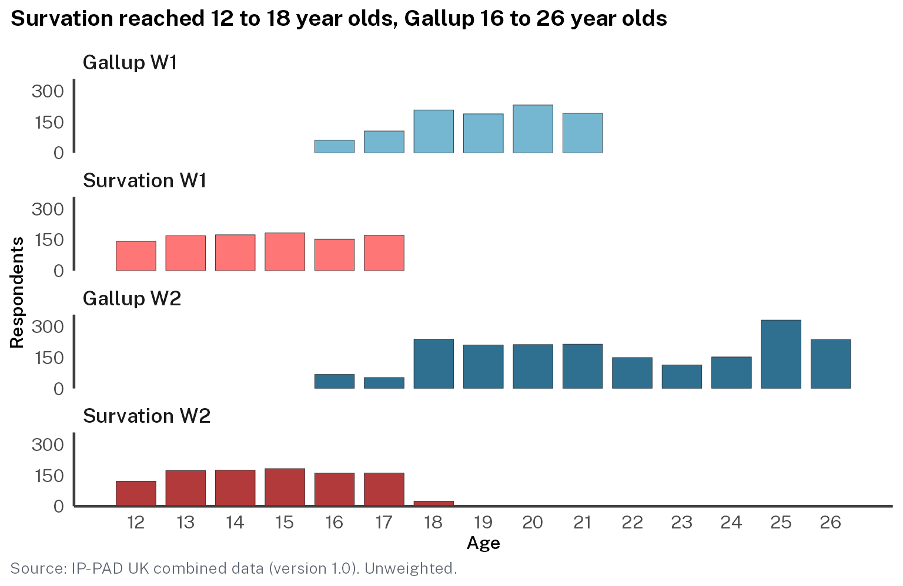
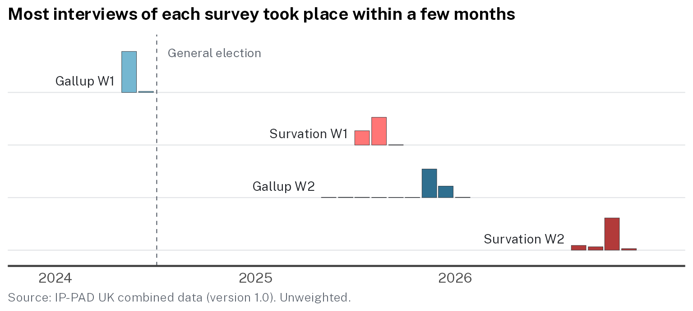

Who took part
Sample
Age
Who answered the four IP-PAD UK surveys, how they were reached, and how the samples differ in age, background and timing.
The IP-PAD UK data bring together four online surveys with 4,968 interviews in total. Two were carried out by Gallup International and two by Survation, and each provider ran two waves about a year apart. Because the surveys reached different age groups in different ways, it helps to know who took part before reading any comparison between them, and this page serves as the background for the other insights.
Two ways of reaching young people
Gallup International interviewed members of its online access panels aged 16 and over, who answered every question themselves. Survation, in turn, reached children through parents on its online panels. A parent gave consent and reported the child’s age, gender, region and type of place, and then handed the device to the child, who answered all remaining questions. In the Survation surveys, the background information thus comes from parents, while the questions on politics and on household income were answered by the young people themselves.
Age
Each panel shows one survey. The bars give the number of respondents at each year of age, on a shared age axis from 12 to 26.
The two providers cover different stages of youth. Survation W1 includes ages 12 to 17 and Survation W2 ages 12 to 18, with a median age of 15 in both. Gallup W1 covers ages 16 to 21, and Gallup W2 added a separate sample of young adults, so that it spans ages 16 to 26 with a median of 21. The providers thus overlap only at ages 16 to 18, and even there the numbers are uneven. Gallup has 167 respondents aged 16 or 17 in W1 and 121 in W2, and Survation W2 has only 25 respondents aged 18. Interestingly, Gallup W2 has 332 respondents aged 25, compared with at most 239 at any other age, a peak that the fieldwork documents do not explain.
When the surveys took place
Each row is one survey. The height of a bar shows the share of that survey’s interviews carried out in a given month. The dashed line marks the general election of 4 July 2024.

The wave number does not order the surveys in time. Gallup W1 was fielded in May and June 2024, during the campaign for the general election of July 2024 and thus still under a Conservative government. Survation W1 followed a year later, in the summer of 2025. Gallup W2 started in May 2025, but 95% of its interviews took place in November and December 2025, after Survation W1. Survation W2 then ran in the autumn of 2026. All surveys but the first therefore took place under a Labour government, and any difference between them can reflect the time of fieldwork as well as the age of the respondents.
Gender, place, education and income
Each row is one answer, grouped by question. The dots show the share of respondents in each survey who gave that answer.

In terms of gender and place, the four samples look much alike. Between 48% and 51% of respondents in each survey are female, and 24 respondents in total describe their gender in another way. Most live in a large town or city, from 44% in Survation W2 to 62% in Survation W1, and every UK region is represented. Education, however, mostly follows age, as it combines the level that respondents are studying for with the highest level attained by those who have left education. In the Survation surveys, 72% of respondents are in the lowest group (ISCED 0 to 2), which mainly reflects that most of them are still working towards their GCSEs. In Gallup, by contrast, 35% of those aged 18 to 21 and 66% of those aged 22 to 26 are studying for or hold a tertiary qualification (ISCED 5 to 8).
The question on household income shows a less expected pattern. In both Gallup surveys, 38% say that their household is living comfortably on its present income. In Survation W1 this share is 52%, but in Survation W2 it is only 30%, although both surveys used the same design. Young adolescents may find this question hard to judge, and the difference could also reflect who took part in each survey, so we would not read it as a change in household finances.
Fresh and recontacted respondents
In both second waves, the providers first invited their earlier respondents again, but few took part, namely 55 in Gallup W2 (5.6% of Gallup W1) and 72 in Survation W2 (7.3% of Survation W1). The rest of each sample was new. The data therefore come from 4,841 different young people, and each survey is best treated as a separate snapshot rather than as a panel.
About these data
The data are not weighted, so the shares on this page describe the respondents rather than all young people in the UK. Each provider also set its own quotas and its own rules for removing low quality interviews. The data page describes the design in detail.